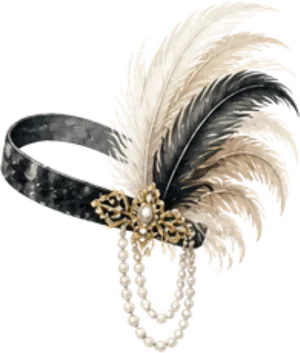
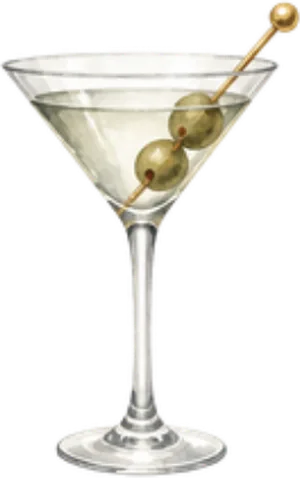
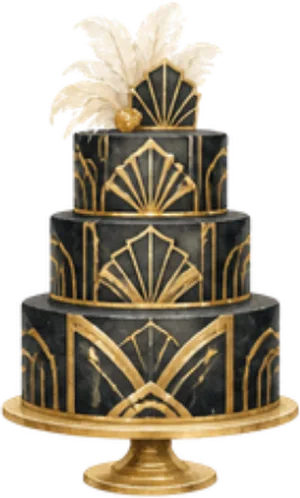
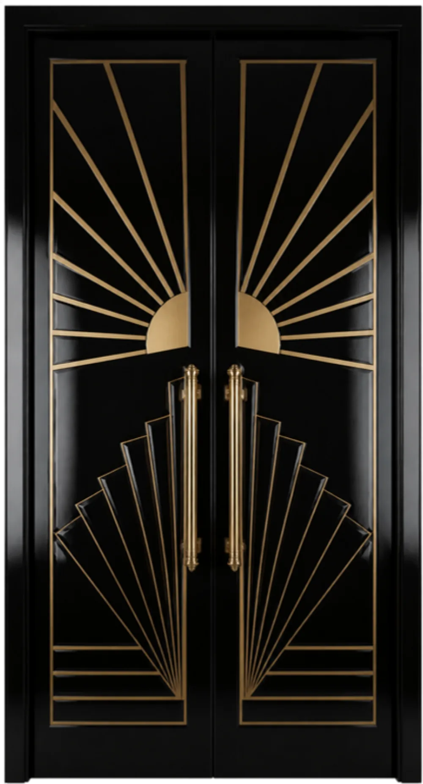
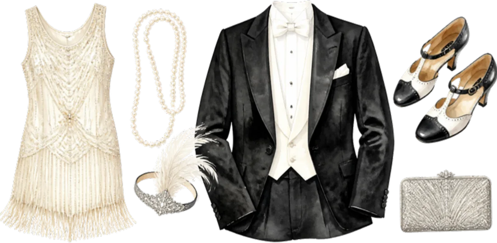

Le programme
Samedi 15 avril 2028
 19 h 00Champagne et pyramide de coupes
19 h 00Champagne et pyramide de coupes
19 h 30Échange des alliances- 20 h 00Orchestre de jazz

20 h 30Cocktails signature- 21 h 30Dîner et charleston

23 h 30Gâteau art déco

Le lieu
Salons de l’Étoile
Paris 8e
Tenue
Années folles
Robes perlées, plumes et sautoirs pour les dames ; smoking et nœud papillon pour les messieurs. Le noir, l'or et l'ivoire sont à l'honneur.

Il reste
--jours
--heures
--minutes
Votre réponse
Merci de répondre avant le 1er mars 2028.
Je serai présent·eJe ne pourrai pas venir